UNITY - Github for Unity Collaboration
UNITY - Github for Unity Collaboration
Teams use VERSIONING software to both keep track of changes and share work on project. Github, using the Github Desktop client, is a free and effective versioning tool, if used properly (Source video).
Getting Started:
[A]: ONE person per team: Github Repo
Set-Up
[B]: EVERYONE:
Local Clone Set-Up
|
|
[C]: Every Day you work on the game:
|
| [D]: Working with GitHub Branches (or not!)
|
| [E]: Resolving GitHub Conflicts
and safely removing the repo |
|
[F]: ADVANCED: Learn More About GitHub, including linked Discord pushes and automatic Unity WebGL builds!
|
TERMS:
"Repo" = Repository; the online folder holding your team project, hosted by GitHub.com.
"Clone/Local Repo" = The repository copy located on your computer, updated with Github Desktop Client app.
"Fetch" = In GitHub Desktop, refresh the History list to see what changes have been made.
"Pull" = Copy all recent changes to your local repository.
"Summary/Commit" = Type a description of the changes you mde and hit Commit to prepare to upload..
"Push" = Upload the changes you made to the online team repo, so others can see them with Fetch and Pull them to their own machines.
"Conflict" = When a changed file on a local copy of an object/script/Scene in the game cannot be Pushed because someone else has Pushed a different copy since the last time the first person Pulled (downloaded teammate changes). This is usually resolved by the first person documenting and deleting their work ("Discard" that item in their change list in Github), Pulling the version already on GitHub, and reproducing their own work in the new copy of the file.
"Revert / Undo" = Don't do this in our team projects this semester. Ever, ever, ever. Contact us for alternatives!
"Stash" = Don't do this either. It create worse problems with Unity. Avoid by pulling before you Commit, and dscarding any conflicting files.
 [A]: BASIC GITHUB REPOSITORY SET-UP [A]: BASIC GITHUB REPOSITORY SET-UP (OnGitHub.com):
1. EVERYONE on the team: Sign-up on GITHUB.COM and choose a USERNAME:
Go to Github.com to make an account login:
- Enter your email, a password, and a username (a username that includes your actual name is usually more convenient for the team).
- Keep careful track of this login information!
-
Share your username with your teammates and teacher.
- Jason's username is Darmatage.
2. ONE PERSON per team: CREATE the REPO on GITHUB.COM:
- On GitHub.com, hit the [Start a Project] button or [New] button (upper left).
- Choose a repository name (no spaces).Add a GitIgnore and choose Unity (will need to be replaced) before hitting [Create Repository].
- Before uploading your initial Unity project, REPLACE the GitIgnore on your computer with this GITIGNORE, to be sure only core project assets get shared (and computer-specific settings are ignored, so Mac and PC computers can work well together).
- Add your teammates to this repository: Choose the Settings tab and In left-Menu, click "Manage Access".
Hit [Invite a Collaborator] to add your teammates' GitHub usernames to this repository (sends them an invitation email from your username).
[B]: LOCAL PROJECT SET-UP (on everyone's computer):
1. Download the Github Client:
Go to desktop.Github.com and download the Github Desktop client installer.
Hit Run.
When prompted, enter the same email and password as for the GitHub account you created (File > Options to reset the login if needed).
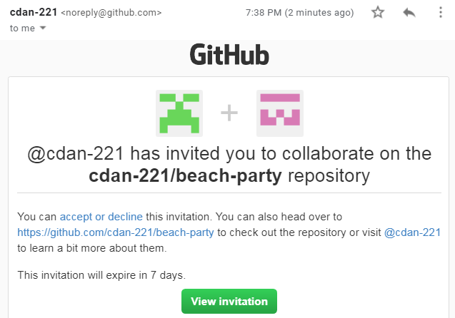
2. FIND the INVITE in your EMAIL
Team members who were not the GitHub Repo creator:
- In another brower tab, open GitHub.com to be sure you are logged in.
- Hit [View invitation] (only opens the right page if you are signed into GitHub)
- Hit [Accept invitation].
Please do not try to access the repo with just the URL: you need the personalized invite!
3. Create a final location folder
Where do you want your local copy of the team repository to be located?
The teacher likes the Desktop, and names the folder "UNITY" inside of a folder "GameDesign".
The folder MUST be on your computer-- not a portable drive or the cloud. NOTE: Once you start putting GitHub repoprojets in this folder, it should NOT be moved or renamed, or the connection to the repo will be broken.
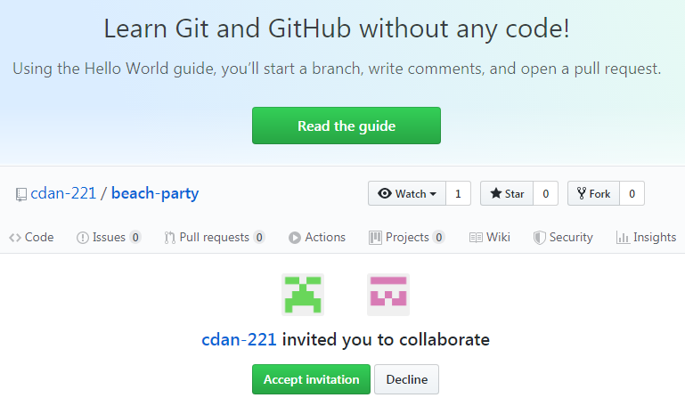
4. In GitHub Desktop:
Click the Middle Option: Clone Repository
(or Current Repository > Add > Clone Repository)
The repository should be available on your list of GitHub project/s.
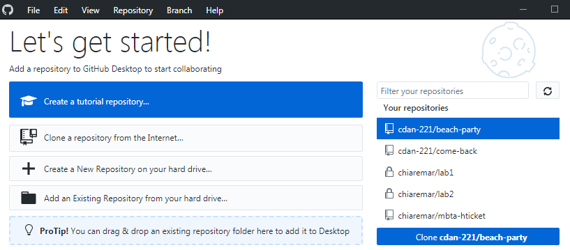
NOTE: If the repo is not visible in GitHub Desktop, you can go to GitHub.com, enter the repository, click the green [Code] button and click "Open with Github Desktop" (or copy the URL from the GitHub site by clicking
[Clone or Download]).
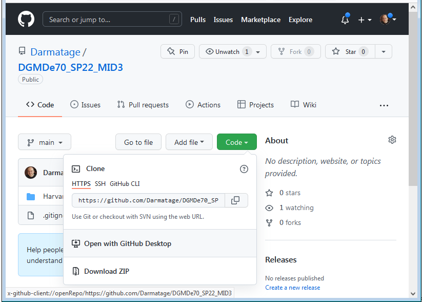
Choose your Github folder location and hit [OK] to create the repo folder there (It will have the repo name as entered on theGitHub site).
This folder is now linked through the Desktop client to Github!
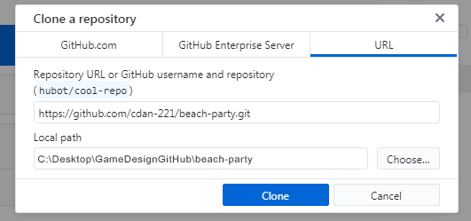
5. ONE PERSON PER TEAM: CREATE THE INITIAL UNITY PROJECT:
a. Create the new, initial Unity Project as a Project folder inside of your GitHub Repository Folder.b. RECOMMENDED: Open Edit > Project Settings > Editor:
Version Control: Set "Mode" to Visible Meta Files.
Asset Serialization: Set "Mode" to Force Text.
c. Upload this new Unty project to the team repo through GitHub Desktop.
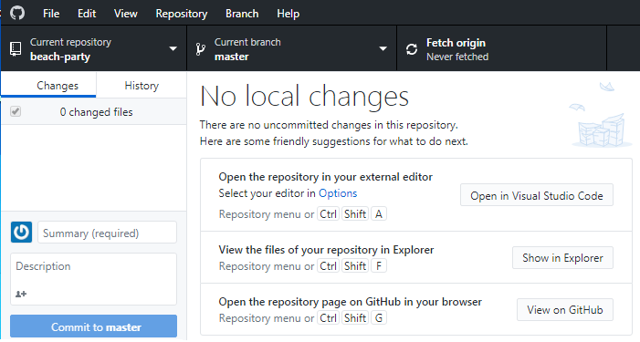
Primary GitHub work to UPDATE the project every day:
[C]: PROJECT UPDATE PROCESS :
(1). GITHUB: Fetch / Pull Teammate Changes 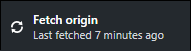
ALWAYS START BY FETCH / PULLING:
Before doing any work on the project, hit [Fetch origin] in Github Desktop to find changes uploaded by your teammates, and then hit [Pull origin] to copy those changes to the local repository folder on your computer.
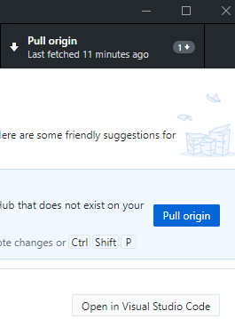
(2) UNITY: Make Your Changes
COMMUNICATE AND MAKE YOUR CHANGES:
Alert your team about which Unity Scene you will work on, then get to work.
Different team members can work on different scenes at the same time, but not the same one.
Only one person can work on a specific Scene file at time. If two people make changes to the same file, a merge conflict will be created when they try to push, and one of those people will need to discard their changes.
To create content for a Scene that someone else is using, create content in an untitled or temporary scene and drag it into the Project panel Assets folder to turn it into a Prefab. Upload the Prefab and it can be aded to the desired Scenes.
(3). GITHUB PUSH STEPS:
- Type a concise Summary to document changes
- Fetch / Pull again (to discard Conflict items).
- Commit your changes. This does NOT share!
- Push to actually share.
HOW TO UPLOAD YOUR CHANGES:
IN UNITY: When you are done making changes:
hit File > Save (to save the current Unity Scene)
AND
File > Save Project (to save project-level changes like Prefabs, folders, animation work, Tags, or Build Settings).
IN GITHUB DESKTOP: You will then see your Changes listed in the GitHub Desktop client to be shared with your teammates.
- Type a short Summary of changes (Always include a Summary, and be sure it describes the key updates / additions).
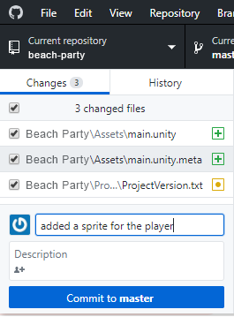
- Fetch / Pull again, to be sure there are no Conflicts between your work and new changes made by your teammates. It is easiest to fix conflicts BEFORE you Commit: right-click the duplicate item/s in your list and Discard. Do not agree to Stash -- that will make the problem worse.
- Hit the blue [Commit to Master] button (lower left) to commit your changes to your local copy of GitHub, to be ready to publish.
- Hit the blue [Push origin] button to publish your changes to the GitHub repository. Your changes are now available to your teammates, who need to “pull” those changes to make them part of their own local copy of the project.
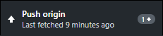
Communicating and Working Sequentially:
REMEMBER: GitHub and Unity cannot merge two copies of the same Scene file (game level), so only one person should ever be working on a particular Scene at a time.
If two people want to work on the same Scene, they need to do so sequentially:
(Step 1): Team Member A:
- Team Member A Pulls the recent changes to the project in GitHub.
- Team Member A then works on the Scene in Unity and saves their changes: File > Save Project.
- In GitHub they Summarize, Pull again, Commit and Push their changes in GitHub.
- Finally, they alert the team that the Scene is released for someone else to change.
(Step 2): Team Member B
- Team Member B Pulls the recent changes to the project.
- They work on the Scene in Unity and save their changes: File > Save Project.
- They Summarize, Pull again, Commit and Push their changes in GitHub.
- Finally, they alert the team that the Scene is released for someone else to change, etc.
Individual Scene files must be carefully “owned” by one person at a time, to prevent conficts: only one person can make changes to a specific Scene at a time (like a game level, called Level1, or main menu, called MainMenu).
BUT, everyone else can still make other changes to the project at the same time!
This including creating Prefabs for the player or NPC characters, environment objects, scripts and visual effects or sound effects.
Create your own YourName_Work Scene file to safely build these game elements and drag them into the Project panel to make a Prefab. These Prefabs can be pushed to GitHub for all to see and use. The person currently "owning" Level1 can drag those Prefabs in there for the class build!
CONFLICT NOTE:
If the Pull (after the Summary) yields a Conflict from someone else's Push:
- Read the error to identify the files in conflict (someone else pushed on those items since you last pulled).
- Select the problem-items in your Changes list.
- Right-click and Discard those items of yours.
- Then hit Pull again, and it should work (contact us if it does not!).
- This loses the work you did on those items, but you can do it again on the newly pulled versions.
|
|
[D]: WORKING WITH BRANCHES:
GitHub Branches serve an important purpose in traditional software projects. Branches allow individual programmers to work on a copy of the project, isolating their changes to test that their work functions before sharing it with the team.
HOWEVER, for this Game Design course, you are encouraged to NOT use GitHub Branches for regular weekly work. Unlike a traditional software project, most things in Unity are Scenes, art assets, or Prefabs, which do not merge like Scripts. Branches in Unity can easily lead to GitHub conflicts, where two people tried to make objects with the same name.
You are encouraged instead to do all work on the default Main branch, primarily in separate Scenes named for your name, and to communicate every day about what you are working on to make sure you do not create duplicate assets. One person should "own" the actual Level Scene at a time. Most important of all: Test your work to be sure there are no compile errors, and PUSH YOUR WORK EVERY DAY. If you spend a week not pushing, you can expect conflicts.
All that said, if you are deeply concerned that the changes you will make could negatively affect the Main project, but still want to test them out with your team, you can choose to make a branch off of Main.
GitHub Branches contain a separate copy of the project (as it existed when the branching occurred).
When we "Switch" between branches in GitHub desktop, our actual Unity project only shows the files for the active branch!
[BRANCHING A] TO CREATE A NEW BRANCH FOR YOUR WORK:
- Click the middle "Current Branch" tab.
- Towards the top of the rolldown, choose [New Branch].
- In the box that opens, name the Branch (I suggest naming it your name, written as YourName, in humpCap notation).
- Hit [Create Branch].
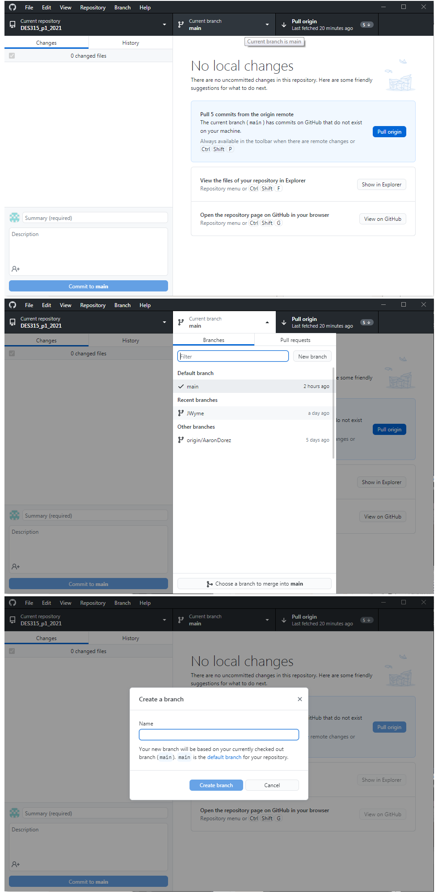 [BRANCHING B] WORK IN YOUR BRANCH:
When you choose a branch to make it active in GitHub, it is also active on your computer and in Unity. Github swaps out which files are currently available on you machine based on your active branch. You can switch to any branch to see the version of the project there!
Try to be careful to only change your intended files in your separate branch. If you change them in both your separate branch and in the Main branch, you will get a Conflict when you try to Merge them that will result in changes needing to be discarded from one of them.
[BRANCHING C] TO MERGE YOUR BRANCH WORK BACK INTO MAIN:
We can easily copy ("Merge") the work in your branch back into Main.
- Switch to the Main Branch (click the middle "Current Branch" tab and click on Main to make it the Current Branch).
- Open the middle tab again, and at the bottom of the rolldown click [Choose a Branch to Merge into Main].
- In the box that open, select your branch (the one you want to Merge) and hit [Merge origin/YourName into Main].
NOTE: The original, separate Branch is preserved in this process, so it can continue to be used for changes or as a backup copy of your work!
[BRANCHING D] DO NOT REVERT, do not hit [UNDO]
Get stuck on something? Ask for help. Reverting in a separate branch can cause all sorts of problems, just like reverting in Main. The [Undo] button is worse. We have many other tools to fix conflicts or other problems. Contact us for help.
[E]: RESOLVING A GITHUB "CONFLICT":Accidents happen. Someone may not remember to save their changes or Push those changes on GitHub, and then someone else may dutifully Pull, not get any changes (because they were not uploaded), and then work on that scene, not realizing they are creating a Conflict: a situation where there are two copies of the same file on GitHub and one needs to be discarded from the Repository.
Communication is key: use an active text chain, Discord channel, or other tools to alert your team when you want to make changes to a Scene, and again when you are releasing it for others to work on. Be good about saving your project and Pushing your changes every day you work, ideally more often.
If there is a conflict in GitHub: The person who did less work, or more disposable work, should document their key changes (write down a description of changes in order to reproduce them), Discard the changes from their local repository, and Pull their teammate’s version to their machine, effectively moving forward with their teammate’s version. They can then repeat their changes on that "clean" version of the file.
1. MOST IMPORTANT THING ABOUT CONFLICTS: Ask us for help if they arise!
NOTE: Are you using the Command Line to acces Git?
Learn more about solutions to problems with Git here.
2. DO NOT REVERT. ALSO: DO NOT HIT THE "UNDO" BUTTON BELOW COMMIT.
Revert (or the Undo button) causes major loss of data, expecially if you Merge the Main repo into your branch, and then revert or "undo"-- you are undoing not just the Merge, but all of yoiur teammates' work since the last time you merged! ACK!
DON'T REVERT
DON'T HIT "UNDO".
ESPECIALLY, DO NOT REVERT OR UNDO IN A BRANCH.
Also, do not agree to Stash.
WHAT SHOULD I DO INSTEAD, if the project is super-broken?
OPTION 1: USE A BRANCH: If the entire project is broken for everyone, you can Branch off of an older version in the History, and then over-write Main with that Branch.
OPTION 2: If the project is only broken on your computer, do not Push that brokenness to everyone else! Ask the teacher for help right away. As a last resort, it may be better to fix local, big problems by replacing your entire local copy of the repository:
- Remove your local copy of the repository from GitHub.
- Remove this project from Unity Hub.
- Rename this project [OldName]_old. It still exists, but neither GitHubDesktop nor Unity Hub can see it. Itn be deleted later.
- Make a new folder for the team repo.
- In GitHub, clone the project into this new folder.
- In Unity Hub, [Add] this new copy of the team project.
You now have a clean start!
OPTION 3: BUT, if your team agrees it is time to Revert (ugh), here are the steps:
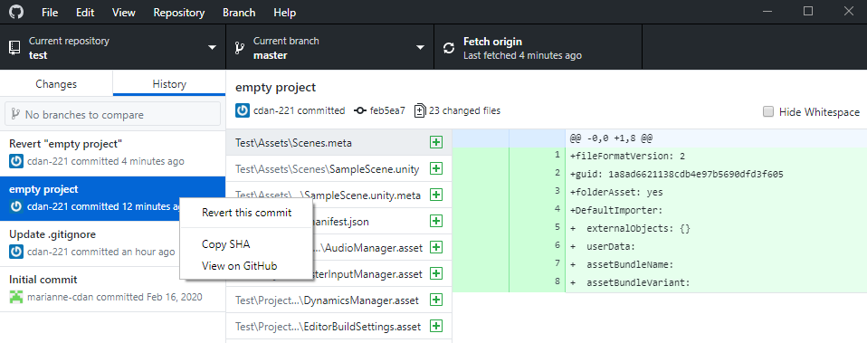
TO REVERT: To rollback a commit that was already pushed to the shared repository:
- Go to the History tab in the GitHub Desktop.
- RightClick on the Commit you want to rollback (in the left column; this is why Summary names are so important!)
- Select Revert this commit.
- Then Push Origin to upload your changes to the shared repo.
NOTE: When you revert multiple commits, it's best to revert in order from newest to oldest. If you revert commits in a different order, you may see merge conflicts. See this explanation: https://help.github.com/en/desktop/contributing-to-projects/reverting-a-commit

HERE ARE SOME OTHER WAYS TO HANDLE PROBLEMS:
PROBLEM A: If you try to Push changes without Fetching/Pulling more recent changes first, you’ll get an alert: 'Newer commits on remote'.
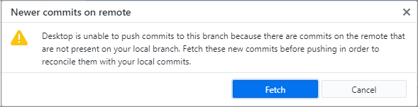
Hit [Fetch] to refresh the change history, then [Pull origin] to get the latest changes before Push origin to upload your changes.
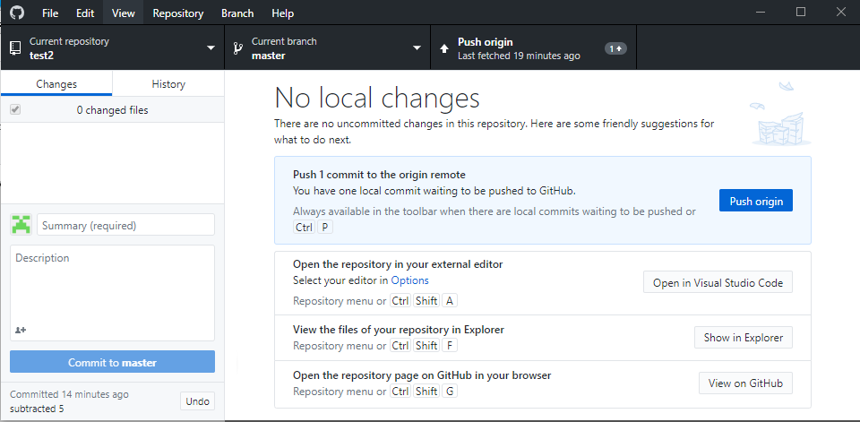
PROBLEM B: If there are conflicts because you both changed the same lines of code or assets, then you’ll get this pop up (see image):
[B1]: You’ll have to "resolve" the conflicts before you can Merge. Click on each conflict to resolve each one (see below), then [Commit merge].
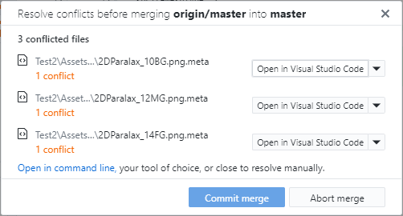
[B2]: To resolve the conflict, you must decide which change to keep.
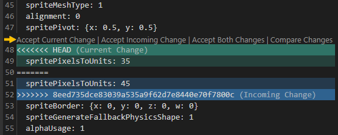
In this case, 2 team members both changed the layer order for the background assets.
One put the sprite at 35 and the other put it at 45.
Decide which one to keep and accept that one: Click the little triangle on the far right of the "Resolve Conflcts" box and choose either 'Accept Current Change' (the edit your TEAMMATE already pushed to the repo) or 'Accept Incoming Change' (the edit YOU made and are tried to upload after). In some rare cases you may want to 'Accept Both Changes'.
[B3]: When all conflicts are resolved, you can hit [Commit merge].
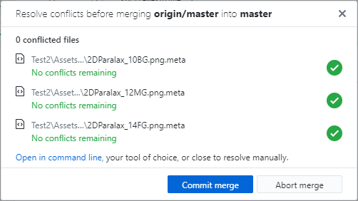
[B4]: Then hit [Push origin] to upload your changes to the team online GitHub repository.
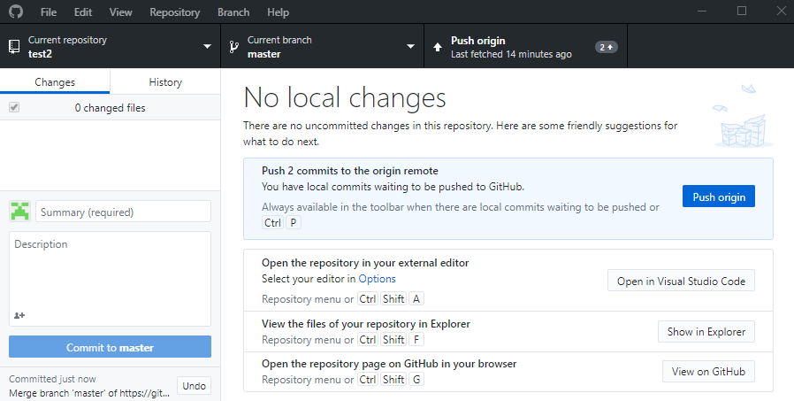
PROBLEM C: Discard vs Ignore
Have changes showed up in your Change list that you KNOW should not be pushed? You can Discard those changes by selecting them and right-clicking on them and choosing the top option, Discard. The changes will be undone on your computer.
Please do not choose the Ignore options-- they add ignore restrictions to your project GitIgnore file.
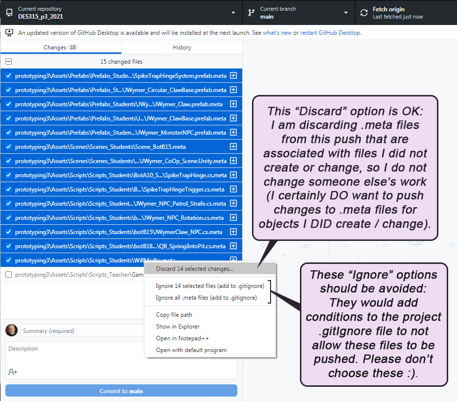
PROBLEM D:
Changing a Git ID, or fixing "Author Unknown" Error:
If you get the "Author Unknown" error, or want to change your Git ID for commits, go to:
File menu > Options (PC) or
Github Desktop menu > Preferences (Mac)
and choose the Git tab on the left to set your username and email to the same ones as your GitHub.com account.
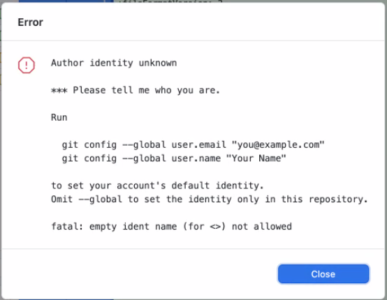
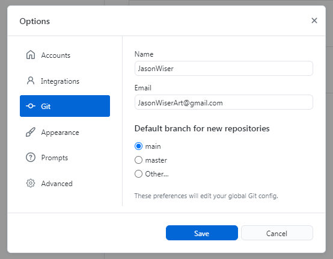
HOW TO DISCONNECT and REMOVE the Repo from your Computer, then Re-CLONE:
PROBLEM E: Everything On My Computer Is On Fire
Does your local copy seem to be in terrible shape, but the team's Main repo on Github.com is still fine? It may be time for the LAST RESORT: to disconnect and then remove the repo from your computer and re-clone the repository to a new location on your computer, and move forward from there. Also, when the project is over, you can use this system to safely remove the Repo and free 1-2 gigs of space on your computer.
[A] Remove your bad repo:
- First, make sure Unity and Photoshop are turned off, as well as your scipting IDE (VSCode, etc): anything that speaks to the files in your Unity project.
- Open GitHub Desktop. Click on "Current Repository" button (upper-left) to see your projects. RightClick your old team repo and choose the bottom REMOVE option, to disconnect your copy from the team repo. You can optinally select "Also move this repository to the Recycle Bin", before hitting the [Remove] button.
- Unity Hub: find the old team game in the list and REMOVE it (click the 3 dots on the right-side).
- You can now delete the old repo folder, if you did notlredy send it to the recyle bin. Empty the recyle bin!
NOTE: If you get a failure in this process (usually if a program is still speaking to files in the repo folder), you can use GitHub to Remove WITHOUT moving the files to the recycle bin, and when GitHub is done, move the folder to the recycle bin manually.
Naturally, do NOT delete the project files manually first, and then push those changes to the repo, or it will erase the project for everyone.
[B] Re-Clone the repo to get a clean copy:
- On your computer GitHub folder (or wherever you put your old game), create a new folder called "YourGameName_v02".
- In GitHub Desktop clone the repo into this new folder. The project may be nested one folder deeper than your previous clone -- that is fine.
- In Unity Hub, add the new project: click [Add] and navigate to inside the project folder (you should see Assets, etc but not click on it).
NOTE: The new Repo copy does not include ancillary folders like "library", due to the correct .GitIgnore file being included to exclude them. Those folders will be created on your machine when you run the new game in Unity for the first time, but will never get pushed to the repo, which is correct.
[F]:TAKE YOUR GIT WORK FURTHER:
Github Desktop is a decent tool for beginners, but it lacks finesse. For a lot more control over the flow of branches in your project, consider downloading and using UnGit.
To improve your understanding of Git and Branching, explore these visual tutorials:
https://LearnGitBranching.js.org/
Want to motivate your team to greater heights of GitHub glory?
Integrate GitHub into your team DISCORD channel with Discord Webhooks, so that each new post can be announced there.
Use GitHub to host a WebGL build and automatically update with every Commit:
These set-up notes come from Amogh Subhedar:
1. In GitHUb Desktop, make a new branch, and name it "builds".
(ideally, this branches off the very first commit, to have less to delete in step 2)
2. Delete all Unity project content and folders in that new branch (NEVER merge back :) ).
3. Create the first WebGL build to get the index.html file:
- Make an initial WebGL build from your Unity project (html file, build folder, template folder).
- Add ONLY the index.HTML file to the builds branch (at top, next to the GitIgnore file).
- Publish (push) this new "builds" branch.
4. Choose the Builds branch:
- Go to GitHub.com to open your project.
- Open the Settings tab, and on the left column click to open "Pages".
- Click "None" to choose the "builds" branch for the webpage.
- Hit [Save] (Game code continues in Main, but now webpage gets the default root of "builds").
5. Create a "workflow" file in main branch:
- On the GitHub.com site Main branch, open the Actions tab.
- Hit "New Workflow" (upper left) and then "Set up a workflow by yourself" (near top).
- Name it mainBuildMaker.yml.
6. Adding the correct mainBuildMaker.yml script:
- Replace the content of mainBuildMaker.yml with this script.
- Customize the script:
- Near the top of this script under env, change 2 items:
UNITY_VERSION : set the correct Unity version,
PROJECT_PATH : set to your Unity project name (the folder that holds the assets, etc ). -
(NOTE: for UNITY_LICENSE : leave the year as 2019)
-
Be sure that the version of
Unity Builder is correct (change the final version # if needed):
line 32: uses: game-ci/unity-builder@v2.0-alpha-14
- Hit [Start Committ]. In the window that opens, hit [Commit Changes] (yes, this goes to Main).
To edit this .yml file again later:
Go to the Main Branch > Code tab, open .gitHub/Workflows, and hit the pencil / edit button.
NOTE: This script calls two 3rd party GitHub plugins:
Unity Builder and Git Auto Commit
-
(No need to install anything-- they exist in GitHub's ecosystem).
-
Unity Builder creates a new Build folder and TemplateData folder.
-
Git Auto Commit makes this happen after each commit.
7. Add a license file for the builds: Use this process to generate the license file with your Unity license (see here for how to find and download the GitHub Artifact file):
- Create a new custom workflow called activation.yml (as in step 5 above).
- Replace the content of activation.yml with this script.
- Manually Run this file:
- Click Actions tab (top).
- Click "Acquire Activation file" (left).
- Click [Run Workflow] (right)
- When run is done, RightClick the new "Acquire Activation file" link (bottom) to "Save Link As".
- Save the .ZIP file to your desktop and extract the Unity_v20xx.x.xxxx.alf file.
- Go to license.unity3d.com/manual:
- Upload the Unity_v20xx.x.xxxx.alf file.
- Choose (1) Personal edition, (2) Less than $100k, and then click [Download license file]
- Find the license in downloads (Unity_v20XX.x.ulf). It's OK to not match your Unity version.
- Add the license as a GitHub "Secret" (encrypted environment variable):
- Back in Github.com, open your repo > Settings > Secrets > Actions.
-
Click [New Repository Secret] to create a new one.
-
Set the Name to the same as in the yml file: UNITY_LICENSE_2019
-
Under Value paste in the content of your license .ULF file (can be opened in notepad).
-
Click [Add Secret].
IMPORTANT FIX NOTES:
[A] Make sure the project .GitIgnore file has [Bb]uild and [Bb]uilds commented # out, in both the build (!) AND main (?) branch, or the build will not push!
[B]
Unity Build Settings: Choose WebGL, click [Switch Platform].
IMPORTANT: Hit [Player Settings] and under " Publishing Settings" set Compression Format from the default Brotli or Gzip to " Disabled". This should fix any WebGL issues in GitHub pages, but here are more fixes. NOTE: if the build keeps saying the compression is an issue after removing all compression, try emptying the WebBuilds folder once to make way for clean replacements.
[C] After step 7 has fully processed your first build, you will need to edit your index.HTML file (the one you initially comitted) to direct each url to the folder containing your build and the build file names (likely " WebBuild"):
Around lines 7-8:
<link rel="shortcut icon" href="WebBuild/TemplateData/favicon.ico">
<link rel="stylesheet" href="WebBuild/TemplateData/style.css">
Around lines 71-76:
var buildUrl = "WebBuild/Build";
var loaderUrl = buildUrl + "/WebBuild.loader.js";
var config = {
dataUrl: buildUrl + "/WebBuild.data",
frameworkUrl: buildUrl + "/WebBuild.framework.js",
codeUrl: buildUrl + "/WebBuild.wasm",
MAINTENANCE:
The library image that is cached after the first build will stay the "starting point" for future builds, meaning each new day of changes needs to be fully re-calculated for each new build.
This is OK, but not ideal
You can update this library image every few days of production, to support faster builds:
- In the mainBuildMaker.yml file, change the word after key in this line (CachedLibraryWeek2, etc):
Tutorials prepared by Jason Wiser, Madwomb.com, with Marianne Chiarella
|